Hilda — audience room (PR)
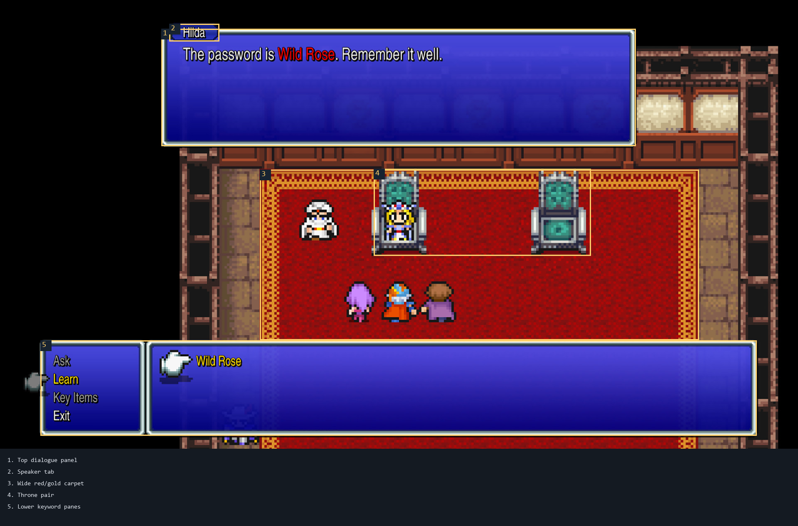
Timber/cream north wall, red/gold audience carpet and thrones.
Asset-only visual review of assembled room proofs, inspected 2026-10-31. No game integration or runtime behavior is assessed.
Wall, threshold, floor, and rug joins look coherent in the shown assemblies
FFII PR references: Hilda audience scene from RPGFan Screenshot 005; Scott refuge from Vorxu’s Altair & Fynn; Tobul smithy from Vorxu’s Salamand & Semitt Falls. Source images are copied into this folder from the attributed AI-Art-FF2 reference package. The sepia map is excluded as a color reference.

Timber/cream north wall, red/gold audience carpet and thrones.
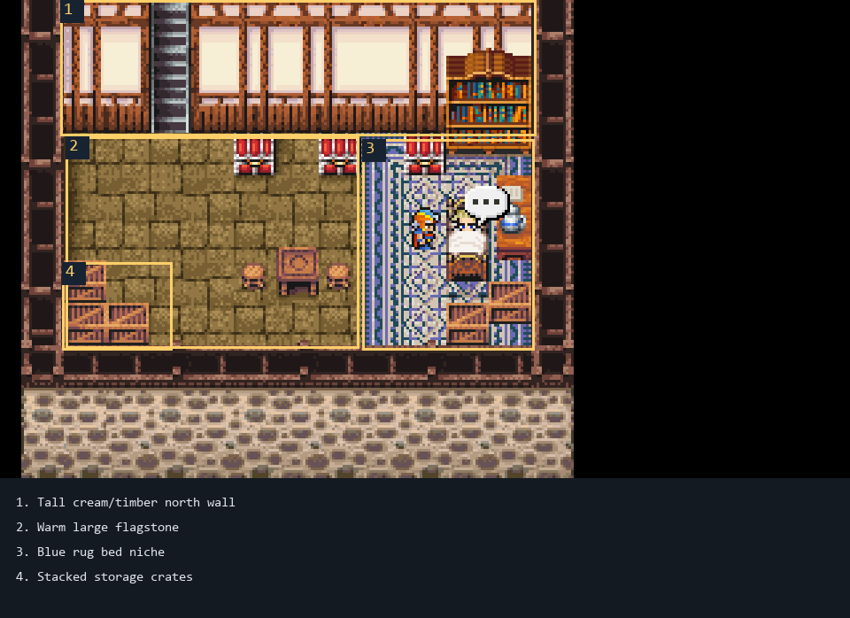
Warm flagstone and blue/cream bed rug with detailed patterning.
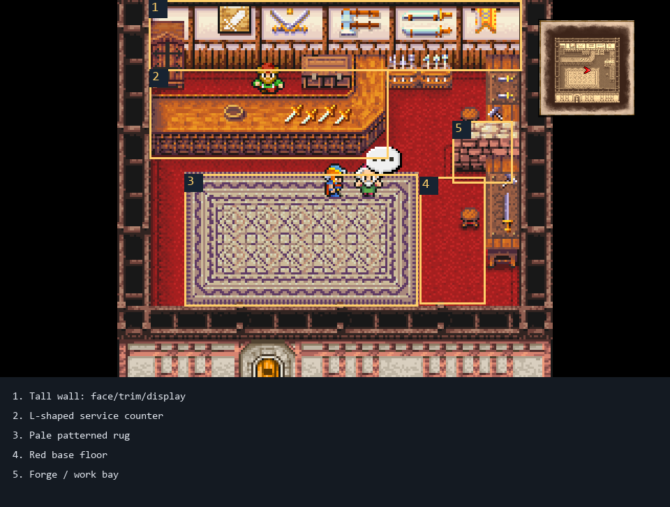
Red shop floor, pale lilac/cream patterned rug and L-shaped counter.
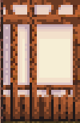
Tall framed cream face with timber posts, top rails and base.
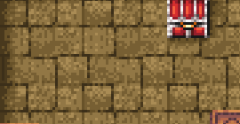
Large, irregular warm stone blocks.
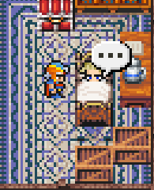
Blue and cream rug has a layered ornamental border and patterned center.
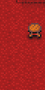
Red field reads distinctly from the stone refuge floor.
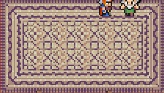
Pale rug uses multiple nested border patterns.
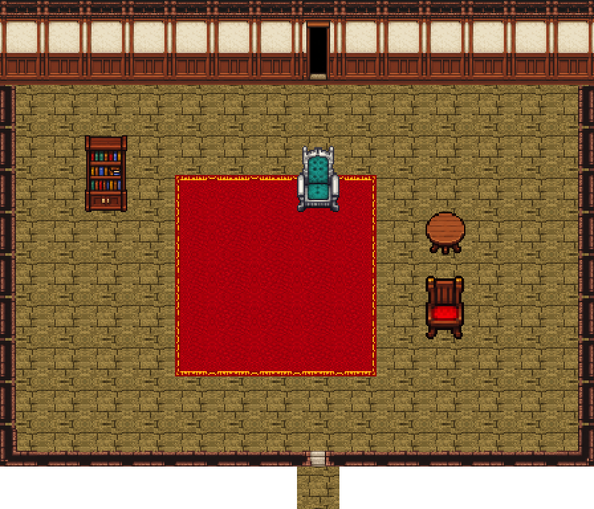
North face, side returns, doorway, flagstone floor and red/gold carpet.

Warm flagstone replaces draft wood; rug and stairs align within the room.
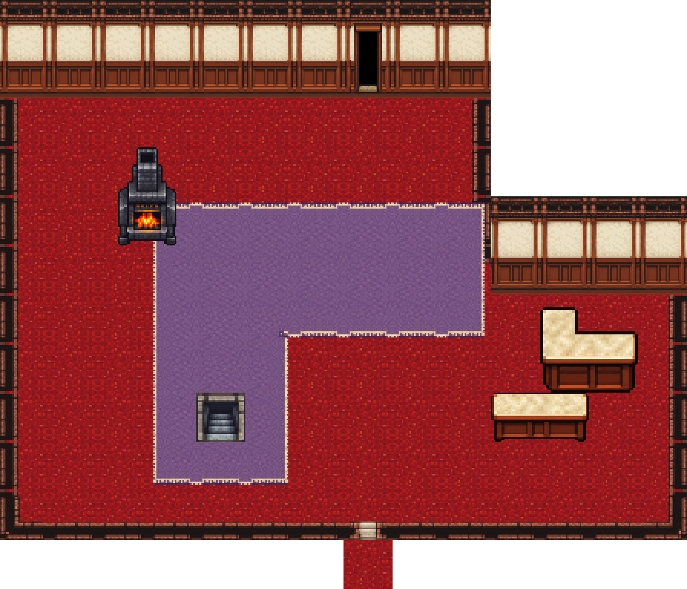
Red field matches the Tobul room material role; L rug inside corner is continuous in the shown assembly.

Warm flagstone, red field, wood, and pale stone are distinct and repeat without visible gaps; motifs remain easy to recognize.
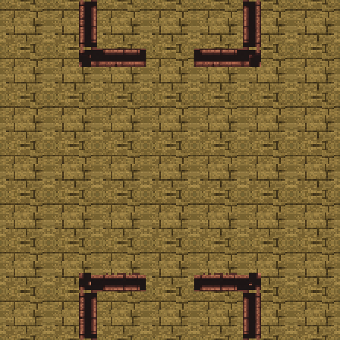
Included inside-corner joins meet the floor plane without visible holes or doubled rails in this sample.

Red/gold rug shape masks; corresponding lilac/cream and navy/cream sheets are also linked below.
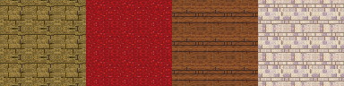
Tile joins are visually aligned; individual motifs repeat across longer runs.

Wall/cap/return components are separate roles; full gallery and inventory links are listed in README.
| Check | Finding from included proofs | Result |
|---|---|---|
| Wall face, cap, side returns | North wall uses the tall face; side boundaries use separate returns. Shown long runs and included inside corners have no visible gaps or doubled cap/base lines. | Pass for shown assemblies |
| Doorways and floor thresholds | North doorway and south threshold align with adjacent floor in the shown room proofs. This is visual alignment only. | Pass for shown assemblies |
| Inside corners and room layering | Dedicated inside-corner samples meet the floor plane; no hole/overdraw visible. Rug L inner corner is continuous in the shop room. | Pass for shown assemblies |
| Floor materials and repeats | Warm flagstone matches the Scott role. The saturated red field matches the Tobul role, and the quieter source-crop removes the earlier bright/dark vertical columns. Floor joins align; tile motifs remain recognizable over long runs. | Visually coherent; repeats remain visible |
| Rug border and ornament | Three rug families remain distinct and their shown borders join cleanly. V2 fields/borders are simpler and more regular than PR’s layered ornamental patterns. | Join pass; style delta remains |
| Doorway interaction, collision, runtime | Visual threshold alignment is visible; interaction, collision, runtime are not shown or tested. | Not assessed |
Records: production README · manifest · verification receipt. See README for scope and manifest hash. Image proofs establish only the displayed asset compositions. No retail 1:1, complete-map fidelity, animation, runtime, or collision claim is made.